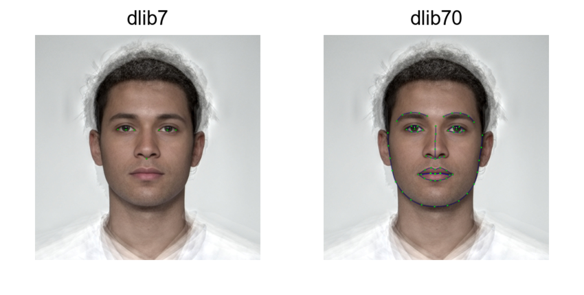
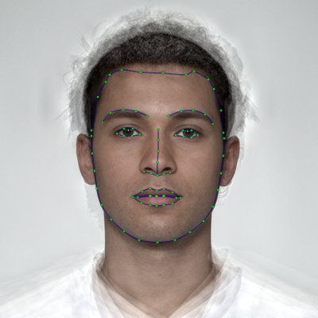
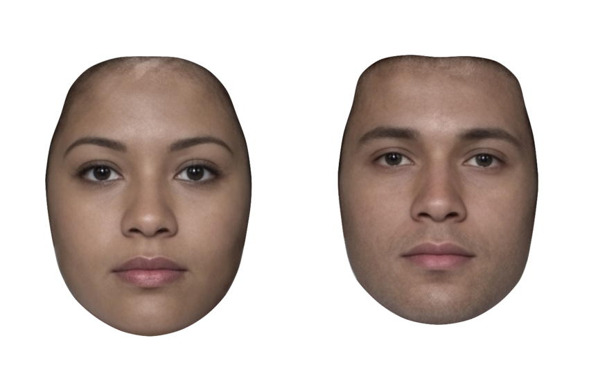
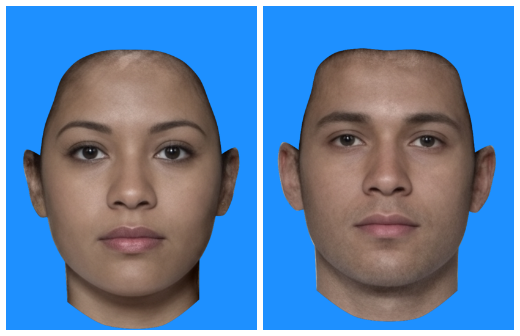
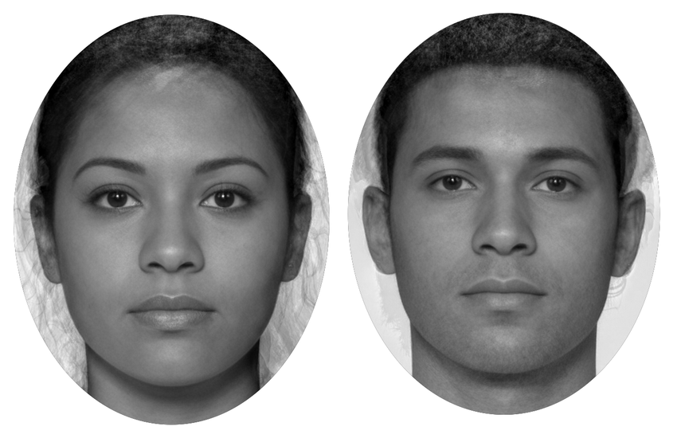
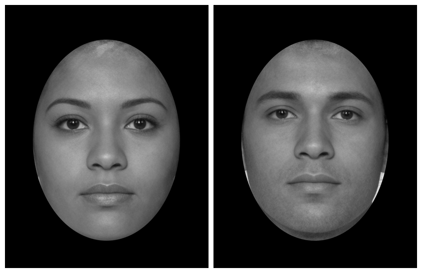
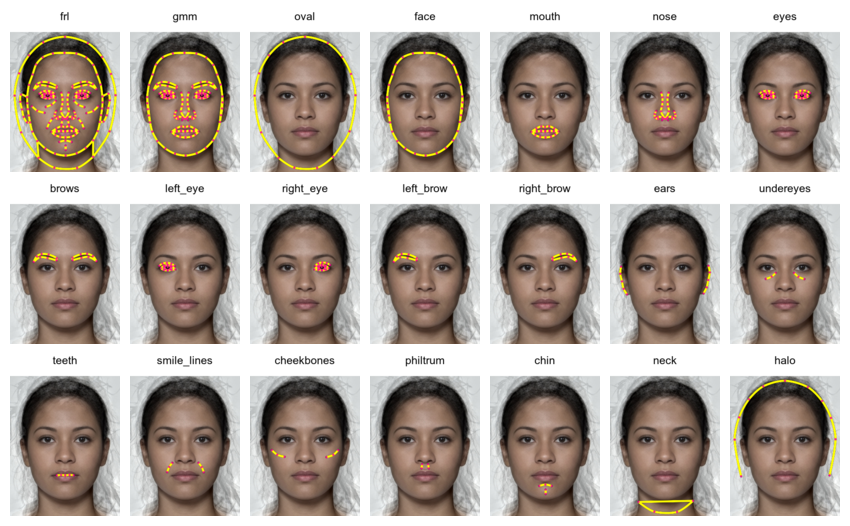
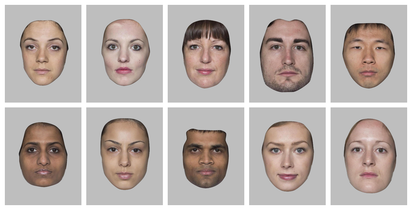

This vignette explains templates and shows you how to mask images relative to their delineation.
# load packages and set maximum plot width
library(webmorphR)
library(webmorphR.stim) # for extra stimulus sets
wm_opts(plot.maxwidth = 850)
# load the demo stimuli
stimuli <- demo_stim()Delineations
A delineation is a description of the shape of the face using points connected by lines. The points are describe by their index and x and y coordinates. The upper left corner is the 0 origin, so the y-coordinates may go the opposite direction to what you expect.
# the first 6 points
stimuli[[1]]$points[, 1:6]
#> [,1] [,2] [,3] [,4] [,5] [,6]
#> x 210.7407 288.1482 210.6481 204.6296 203.3333 205.2778
#> y 226.4815 226.3889 221.6667 223.3333 226.8519 231.4815There is a function so you can get selected point coordinates for a whole stimulus list.
get_point(stimuli, 0:2)
#> image point x y
#> 1 f_multi 0 210.7407 226.4815
#> 2 f_multi 1 288.1482 226.3889
#> 3 f_multi 2 210.6481 221.6667
#> 4 m_multi 0 211.1111 214.4444
#> 5 m_multi 1 286.4815 215.5556
#> 6 m_multi 2 210.9259 210.2778The lines are a list of vectors. Each vector contains the line’s point indices, but 0-based (yes, I know this is annoying, but psychomorph was developed in Java and all existing template files index the points starting with 0).
# the first 6 lines
stimuli[[1]]$lines[1:6] |> str()
#> List of 6
#> $ : int [1:2] 0 0
#> $ : int [1:2] 1 1
#> $ : int [1:9] 2 3 4 5 6 7 8 9 2
#> $ : int [1:9] 10 11 12 13 14 15 16 17 10
#> $ : int [1:5] 18 19 20 21 22
#> $ : int [1:5] 23 24 25 26 27NB: Currently, I’m assuming any lines that start and end with the same point are closed shapes, so you can’t make tear-drop shapes without doubling the end coordinate. I might change this someday, so there is also a vector for flagging whether shapes are closed; this is currently always FALSE.
stimuli[[1]]$closed
#> [1] FALSE FALSE FALSE FALSE FALSE FALSE FALSE FALSE FALSE FALSE FALSE FALSE
#> [13] FALSE FALSE FALSE FALSE FALSE FALSE FALSE FALSE FALSE FALSE FALSE FALSE
#> [25] FALSE FALSE FALSE FALSE FALSE FALSE FALSE FALSE FALSE FALSE FALSE FALSE
#> [37] FALSE FALSE FALSE FALSE FALSE FALSE FALSE FALSETemplates
Delineations need to follow the same template in order to work together. For example, you can’t average faces that are delineated with different templates.
Read in images with webmorph templates, or automatically delineate images (details below).
WebmorphR uses 5 main templates:
- FRL: the 1889-point Face Research Lab template that is the default manual template at webmorph.org. This template is also used in the demo stimuli and the Chicago Face Database delineations.
- dlib7: The 7-point internal automatic face detection. This algorithm requires a python installation, so is a little harder to set up, but doesn’t send your images to an external company. This is actually a 5-point template (corners of the eyes and tip of the nose), but I added the centre points of the corners of the eyes as point 0 and 1 for consistency with all of the other templates. The “pupil” points don’t always line up with the pupils, as they’re just calculated from the corners.
- dlib70: The 70-point internal automatic face detection. The files for this are quite large, so you will be prompted to download them the first time you try to use this delineation.
- fpp106: The 106-point Face++ template. This is a high-quality and detailed template, but requires you to set up your own API key with Face++ and will transfer your images to Face++, so make sure you understand the privacy consequences of this.
- fpp83: The 83-point Face++ template. This is an old template, but I keep it for consistency with the old auto-delineation template on webmorph.org.
s <- load_stim_london("030")
dlib7 <- auto_delin(s, "dlib7", replace = TRUE)
dlib70 <- auto_delin(s, "dlib70", replace = TRUE)
fpp106 <- auto_delin(s, "fpp106", replace = TRUE)
fpp83 <- auto_delin(s, "fpp83", replace = TRUE)
c(s, dlib7, dlib70, fpp106, fpp83) |>
rename_stim(c("frl", "dlib7", "dlib70", "fpp106", "fpp83")) |>
draw_tem() |>
crop_tem(50) |>
pad(.15, 0, 0, 0) |>
gglabel(size = 20) |>
plot()
The “smiling” demo dataset doesn’t have FRL templates yet (it will soon), but can demonstrate how the automatic delineation algorithms deal with open mouths.
smile <- load_stim_smiling("030")
dlib7s <- auto_delin(smile, "dlib7", replace = TRUE)
dlib70s <- auto_delin(smile, "dlib70", replace = TRUE)
fpp106s <- auto_delin(smile, "fpp106", replace = TRUE)
fpp83s <- auto_delin(smile, "fpp83", replace = TRUE)
c(dlib7s, dlib70s, fpp106s, fpp83s) |>
rename_stim(c("dlib7", "dlib70", "fpp106", "fpp83")) |>
draw_tem() |>
crop_tem(50) |>
pad(.15, 0, 0, 0) |>
gglabel(size = 20) |>
plot()
Automatic Delineation
If your images aren’t delineated, you can use the
auto_delin() function or upload them to webmorph to use the extensive manual delineation
functions there and the 189-point FRL template.
The auto-delineation has three options.
dlib
You can use the face recognition algorithms from dlib to delineate faces on your computer without transferring them to a third-party service. These files are big (~100MB) and it’s tricky to include on CRAN, so you can download them from github. I’ll be training more templates to include in this package soon.
remotes::install_github("debruine/webmorphR.dlib")This also requires reticulate, python and the installation of a few packages, and can be tricky.
Many of my issues were solved by setting up a virtual environment for
webmorph, installing
dlib, and then setting RETICULATE_PYTHON in my .Revniron using
usethis::edit_r_environ().
RETICULATE_PYTHON="~/.virtualenvs/webmorph/bin/python"The default is “dlib7”, which is a 7-point template (tip of the nose, corners of the eyes, and their midpoints) and works without access to external services. It uses Davis King’s shape_predictor_5_face_landmarks.dat.
A better (but slower) option is “dlib70”, a 70-point template (68 plus 2 added centre eye points) from Davis King’s shape_predictor_68_face_landmarks.dat.
frl <- demo_stim("test", "m_multi") |> crop(.8, .8)
dlib7 <- auto_delin(frl, "dlib7", replace = TRUE)
dlib70 <- auto_delin(frl, "dlib70", replace = TRUE)
You can also use your own landmark file by including it with the
argument model_path. Learn more about training
landmark models or search for pre-trained models, such as this 81-point
model. (I don’t think it handles the hairline well, so am working on
training my own model using stimuli more typical to face research.)
download.file("https://github.com/codeniko/shape_predictor_81_face_landmarks/raw/master/shape_predictor_81_face_landmarks.dat", "dlib81.dat")
dlib_custom <- auto_delin(frl, replace = TRUE,
model_path = "dlib81.dat")
dlib_custom |>
draw_tem(pt.shape = "index",
pt.size = 12)
I added the lines and pupil centres to the existing 5-point and
68-point shape landmark files for webmorphR; you can add your own lines
with change_lines(). Yes, all of the available landmark
files use a bonkers numbering system like this. The lines don’t do much
for image processing, but do help you to visually assess the accuracy of
the delineation.
dlib_custom_lines <- dlib_custom |>
change_lines(line_id = "face", pts = c(0:16, 78, 74, 79, 73, 72, 80,
71, 70, 69, 68, 76, 75, 77, 0)) |>
change_lines(line_id = "left_eyebrow", pts = c(17:21)) |>
change_lines(line_id = "right_eyebrow", pts = c(22:26)) |>
change_lines(line_id = "top_left_eye", pts = c(36:39)) |>
change_lines(line_id = "bottom_left_eye", pts = c(39, 40, 41, 36)) |>
change_lines(line_id = "top_right_eye", pts = c(42:45)) |>
change_lines(line_id = "bottom_right_eye", pts = c(45, 46, 47, 42)) |>
change_lines(line_id = "nose", pts = c(27:30, 33)) |>
change_lines(line_id = "under_nose", pts = c(31:35)) |>
change_lines(line_id = "outer_upper_lip", pts = c(48:54)) |>
change_lines(line_id = "outer_lower_lip", pts = c(54:59, 48)) |>
change_lines(line_id = "inner_upper_lip", pts = c(60:64)) |>
change_lines(line_id = "inner_lower_lip", pts = c(64:67, 60))
dlib_custom_lines |>
draw_tem() |>
plot()Face++
Auto-delineation with web-based software Face++ is better, but requires a free API key from Face++. After signing up for an account, go to https://console.faceplusplus.com/app/apikey/list and request a free API key. Then add the key and secret to your .Renviron file.
The function usethis::edit_r_environ() will open up your
.Renviron file (you may need to install usethis). Append
the following two lines to it, replacing “1234567890abcdefghijk” with
your personal key and secret. Then you can save and close the file and
restart R to load these into your environment.
FACEPLUSPLUS_KEY="1234567890abcdefghijk"
FACEPLUSPLUS_SECRET="1234567890abcdefghijk"Now you can access the 106-point (fpp106) and 83-point (fpp83) templates. Remember, this uploads your images to the Face++ website.
fpp83 <- auto_delin(frl, "fpp83", replace = TRUE)
fpp106 <- auto_delin(frl, "fpp106", replace = TRUE)
The 83-point template has a confusing structure and is the only template where the first two points aren’t the left and right pupil, so I don’t recommend using it, but it’s available for consistency with the old method used on webmorh.org.
The Face++ auto-delineations can handle images with more than one face. By default, they return the delineation for the first face (I’m not entirely ure how they decide which is first), but you can set the face argument to another number if your images have multiple faces.
# combine two faces into one image with a border
s <- demo_stim() |>
plot(padding = 0) |>
pad(20, fill = "dodgerblue")
# get delineations for the first and second face
face1 <- fpp_auto_delin(s, "fpp106", TRUE, 1)
face2 <- fpp_auto_delin(s, "fpp106", TRUE, 2)
# add template viz and plot
c(face1, face2) |> draw_tem() |> plot(nrow = 2)Manual delineations
The best way to delineate faces from scratch is through webmorph.org, but webmorphR has a (very
experimental) shiny app that lets you adjust delineations manually. If
you notice that an auto-delineation isn’t quite right, you can open up
the stimuli using delin() and manually adjust it.
stimuli <- demo_stim() |> auto_delin("dlib7", replace = TRUE)
manual_delin <- delin(stimuli)Visualise delineations
Use the draw_tem() function to show the delineations. By
default, points are translucent green circles and lines are translucent
blue.

You can change the default colours and translucency with the
line.color pt.color and
line.alpha and pt.alpha arguments. Change the
point shape with pt.shape. Remove the image and set the
background color with the bg argument.
Subset template
It can be useful to subset or change delineation points or lines for analysis or visualisation.
Features
The features() function returns the points that make up
different subsets of the FRL template (the default manual template for
webmorph.org) or the dlib70 template.
features("left_eye", "right_eye")
#> [1] 0 1 2 3 4 5 6 7 8 9 10 11 12 13 14 15 16 17 18 19 20 21 22 23 24
#> [26] 25 26 27 28 29 30 31 32 33 34 35 36 37 38 39 40 41 42 43Subset template
The “gmm” features are the eyebrows, eyes, nose, and mouth points,
plus the face oval. This is a common subset to use for geometric
morphometric analyses. Use the subset_tem() function to
select just those delineation points. The line definitions will be
automatically updated and any lines that no longer have points will be
deleted.
stimuli |>
crop_tem() |>
subset_tem(features("gmm")) |>
draw_tem(pt.size = 5) |>
plot()Make sure to add the tem_id for faces with other
templates, such as the 70-point auto-delineation “dlib70”. You can also
add points manually.
# add 70-point delineation
stimuli_newdelin <- stimuli |>
crop_tem() |>
auto_delin("dlib70", replace = TRUE)
keep_pts <- c(0, 1, features("face", tem_id = "dlib70"))
stimuli_newdelin |>
subset_tem(keep_pts) |>
draw_tem(pt.size = 5) |>
plot()Change lines
When you alter the number of points, the remaining lines don’t always make sense.
s <- stimuli |> subset_tem(features("face"))
s |>
draw_tem(line.color = "hotpink", line.alpha = 1) |>
crop_tem(50) |>
plot()Notice the extra lines at the ears; they’re the lines that went around the outside of the ears, and weren’t automatically deleted because the two points that connect them to the head are still there.
s[[1]] |>
draw_tem(pt.shape = "index", pt.size = 10,
line.color = "hotpink", line.alpha = 1) |>
crop_tem(50) |>
plot()Figure out the relevant line numbers from the template. Here, they are the lines connecting points 0 and 2, and connecting points 3 and 5, so lines 3 and 4.
s[[1]]$lines |> str()
#> List of 8
#> $ : num [1:5] 0 26 1 27 2
#> $ : num [1:5] 3 28 4 29 5
#> $ : num [1:2] 0 2
#> $ : num [1:2] 3 5
#> $ : num [1:13] 0 15 16 17 18 19 20 21 22 23 ...
#> $ : num [1:3] 2 6 7
#> $ : num [1:7] 7 8 9 10 11 12 13
#> $ : num [1:3] 13 14 5
s1 <- s |>
change_lines(line_id = 3:4, pts = NULL)
s1[[1]] |>
draw_tem(pt.shape = "index", pt.size = 10,
line.color = "hotpink", line.alpha = 1) |>
crop_tem(50) |>
plot()Alternatively, you can delete all of the lines and start over.
# remove all lines
s2 <- s |>
change_lines(line_id = 1:8, pts = NULL)
s2[[1]]$lines
#> list()
s2[[1]] |>
draw_tem(pt.shape = "index", pt.size = 10) |>
crop_tem(50) |>
plot()The numbering is odd here for historical reasons. The 189-point Face Research Lab (FRL) template was derived from an earlier 179-point template from the Perception Lab in St Andrews. The extra points around the ears, nose, and neck were added then, so they’re out of order. But there are thousands of faces delineated with this template, so it’s too late to change.
face_oval <- c(0, 26, 1, 27, 2, 6:14, 5, 29, 4, 28, 3, 25:15, 0)
s3 <- s2 |>
change_lines(line_id = 1, pts = face_oval)
s3[[1]] |>
draw_tem(line.color = "hotpink", line.alpha = 1) |>
crop_tem(50) |>
plot()Masking
Masking with Templates
If your images are delineated with the FRL template (the default for example stimuli in webmorph), you can use the built-in masking features.
# load stimuli with templates
stimuli <- load_stim_composite("multi")The default mask crops around the face with a white background.

You can set the mask to any combination of the following: oval, face, neck, ears (left_ear, right_ear), eyes (left_eye, right_eye), brows (left_brow, right_brow), mouth, teeth, nose.

You can reverse the mask. You can also use alpha transparency for the fill colour.
Oval Mask
I hate the “standard oval mask”, which was mainly used because it was easy, rather than a good idea for face perception. But if you really want to replicate some stimuli from the 80s…

By default, the oval mask calculates the maximum and minimum x and y
coordinates in the template and masks each face according to this. Set
each = FALSE to calculate this across all images and apply
the same oval to each.
stimuli |>
greyscale() |>
# remove template points to make the oval tighter around the face
subset_tem(features("face")) |>
mask_oval(fill = "black", each = FALSE) |>
plot()
Subset templates
You can subset template points for images delineated with the FRL
template using the convenience function features().
full_tem <- demo_stim()[1]
pts_to_keep <- features("eyes", "nose", "mouth", "brows")
pts_to_delete <- features("cheekbones", "undereyes", "smile_lines")
internal_features <- subset_tem(full_tem, pts_to_keep)
no_lines <- subset_tem(full_tem, pts_to_delete, keep = FALSE)
c(full_tem, internal_features, no_lines) |>
draw_tem() |>
crop_tem() |>
plot()
Here are all of the available named features. The feature “gmm” is the subset of points commonly used for geometric morphometrics, which excludes points that don’t have clear anatomical definitions.
features <- c("gmm", "oval", "face", "mouth", "nose", "eyes", "brows",
"left_eye", "right_eye", "left_brow", "right_brow",
"ears", "undereyes", "teeth", "smile_lines",
"cheekbones", "philtrum", "chin", "neck", "halo")
# crop stimuli to make them easier to see
crops <- crop_tem(full_tem)
# plot each feature subset
new_tems <- lapply(features, function(ft) {
crops |>
subset_tem(features(ft)) |>
draw_tem(pt.color = "#FF0099",
pt.size = 8,
line.color = "#FFFF00",
line.size = 5,
line.alpha = 1)
}) |> do.call(what = c)
new_tems |>
pad(50, 0, 0, 0, fill = "white") |>
rename_stim(features) |>
label() |>
plot()
Stimulus set
Now it’s relatively straightforward to create a stimulus set that matches old papers.
load_stim_london(1:10) |>
greyscale() |>
align() |>
# remove template points to make the oval tighter around the face
subset_tem(features("face")) |>
mask_oval(fill = "grey") |>
crop_tem(50) |> # crop to template boundary and add 50px on each side
plot(nrow = 2)Although I still think the delineated masking is better :)
load_stim_london(1:10) |>
resize(0.5) |> # resize to process faster
mask(fill = "grey") |>
# remove external features before procrustes alignment
subset_tem(features("gmm")) |>
align(procrustes = TRUE) |>
# crop to template boundary and add 50px on each side
crop_tem(50) |>
plot(nrow = 2)
Custom Masks
You can define a custom mask. The code below is useful for finding the template points you want to outline. It crops around the points, makes the image darker, makes it larger (so the text is higher-resolution), and plots it with the point indices.
stimuli <- load_stim_smiling("030") |>
auto_delin("dlib70", replace = TRUE)
stimuli |>
crop_tem() |>
resize(2) |>
draw_tem(pt.size = 35, pt.shape = "circle", pt.alpha = 1, pt.color = "white") |>
draw_tem(pt.size = 20, pt.shape = "index", pt.alpha = 1, pt.color = "black",
line.alpha = 0) |>
plot()
Let’s say you wanted to mask the right side of the face and the left eye. You set up the mask as a list of named areas, and each area is a list of vectors of the points along each segment of the enclosing mask.
mask <- list(
right_face = list(
10:18, #chin to right temple
c(18, 28:24, 29), # right temple to between eyes
c(29:32, 35, 53, 64, 68, 59, 10) # midline points
),
left_eye = list(
38:41, # top lid
c(41:43, 38) # bottom lid
)
)
mask(stimuli, mask, fill = "hotpink", reverse = TRUE) |>
crop(.6, .6) |>
plot()
This script took 1.1 minutes to render all the included images from scratch.